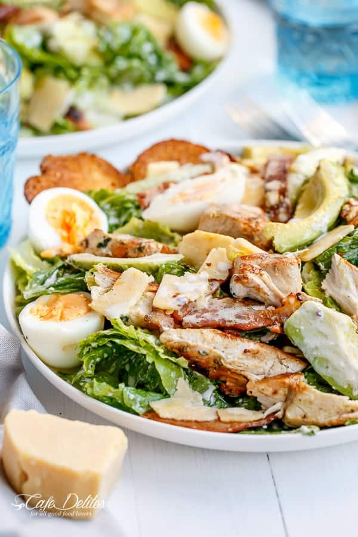

FRIED SALMION FILLET WITH AVICADO, GREENS & BOILED EGG
- 8g|26g(net carbs|total)
- 49g protein
- 71g|14%(total fat|sat.)
est.nutritional values per one serving, may vary depending on ingredients used.
INGREDIENTS
- 1 salmon fillet
- 2.5 cups spinavh
- 1 egg
- 1 medium avocado
- 1/2 tbsp olive oil
- 1/2 tbsp olive oil
- 1 lime,juiced
- salt and pepper
DRESSING
DIRECTIONS
Hard-boil the egg(5-6 min, to tast).
Wash the salmo & pat dry with paper towel.
Preheat a pan to med-high, add olive oil & salmon. Fry on both sides until cokked through.
Add washed spinach or other green salad to a bowl & mix with the ingredients for the dressing.
Cut the avocado in slices and the warm boiled egg in quarters & arrange on top. Add the salmon when ready. ENJOY!